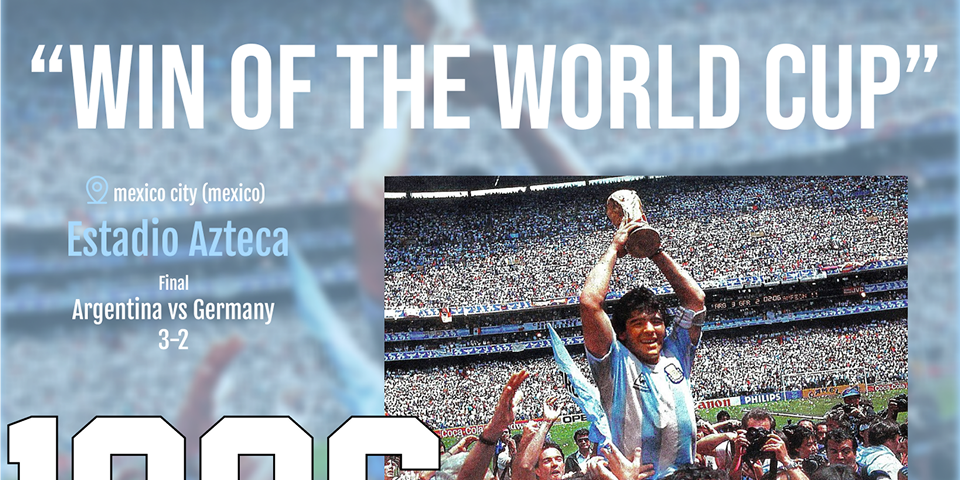
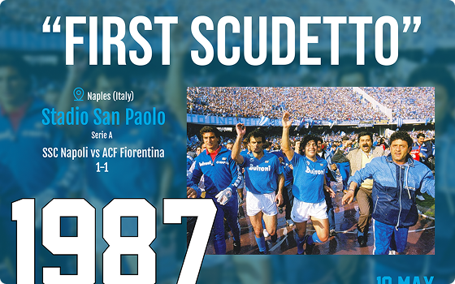
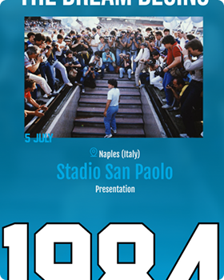

Home - ingresso e orientamento
La prima tappa del racconto. Qui si presentano i temi centrali della carriera e si orienta il lettore verso i capitoli successivi.
Simone Carannante · UI/UX Design · 2026
Un'esperienza editoriale responsive che attraversa Argentina, Boca Juniors, Napoli e le tracce lasciate nelle città, per raccontare la persona oltre il mito sportivo.

Simone Carannante
ITS Web Design e Strategie Digitali
UI/UX Design
ITS Academy I-CREA, CFP Bauer Milano · 2026
Una storia in quattro capitoli
La Home orienta il racconto. Argentina, Boca Juniors e Napoli separano momenti e identità della carriera; la Gallery raccoglie murales e dediche nelle città attraversate.
La prima tappa del racconto. Qui si presentano i temi centrali della carriera e si orienta il lettore verso i capitoli successivi.

Il capitolo dedicato alle tappe internazionali. Si esplorano i momenti più significativi con la maglia albiceleste e le emozioni dei Mondiali.

La casa madre. Questo capitolo racconta le radici, il debutto e il ritorno trionfale nel club che ha lanciato la carriera.

Il capitolo dedicato alle tappe internazionali. Si esplorano i momenti più significativi con la maglia albiceleste e le emozioni dei Mondiali.

Un archivio emotivo. Murales, dediche, momenti privati e pubblici raccolti in un percorso visivo che completa il racconto.
This is a text cursor animation
Ogni capitolo mantiene la stessa logica editoriale, ma adotta colori, tipografia e immagini legati al proprio contesto.

This is a text cursor animation
I colori della Selección come simbolo identitario. Un'estetica che appartiene a tutto un paese.
.png)
This is a text cursor animation
Il campo più caldo del mondo. I colori del club operaio di Buenos Aires diventano un'identità tribale.
.png)
This is a text cursor animation
A Napoli il calcio è religione. Il celeste del SSC diventa il colore di una città che si è consacrata al campione.
.png)
This is a text cursor animation
Quando l'immagine parla da sola. Uno sfondo neutro che lascia spazio alla forza visiva dei murales e dei tributi.
SITEMAP
Everything you need to ship confidently, from planning to production.
Enables you to rapidly search, navigate, and understand code, right from GitHub.com.
Learn more ›Enables you to rapidly search, navigate, and understand code, right from GitHub.com.
Learn more ›Enables you to rapidly search, navigate, and understand code, right from GitHub.com.
Learn more ›Enables you to rapidly search, navigate, and understand code, right from GitHub.com.
Learn more ›This is a text cursor animation
Il deck distingue con chiarezza ciò che è stato progettato dalle direzioni che potrebbero ampliare il racconto.
Explore the platform ›Controversie, dipendenze ed errori sono parte della storia, ma non sono stati inclusi nella versione principale.
Solidarietà e rapporto con la gente comune sono una possibile estensione futura.
This is a text cursor animation
Il desktop alterna testo e immagini; a 390 px la gerarchia diventa lineare e ogni episodio concentra titolo, prova visiva e contesto.

Layout ampio oltre 390 px - testo e immagini alternati.

Gerarchia lineare fino a 390 px inclusi.
Modalità mobile fino a 390 px inclusi; layout ampio oltre 390 px.
Dal progetto al case study
Per raccontare Sentcell ho progettato una seconda interfaccia: questo case study. Ho studiato Primer Brand e combinato i suoi componenti per dare una forma coerente al racconto.
Dal mito all'uomo
Ogni dettaglio racconta Diego.
Questo progetto racconta Maradona attraverso immagini, colori e tipografia. Ogni sezione è stata progettata per mostrare non solo il campione, ma anche l'uomo che ha lasciato un segno nella storia del calcio e nella vita di milioni di persone.